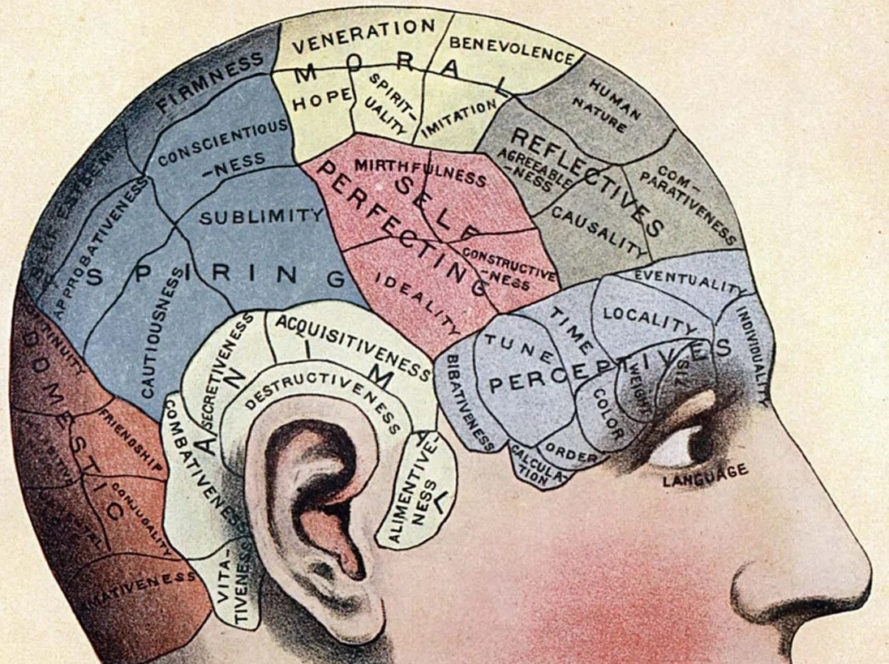
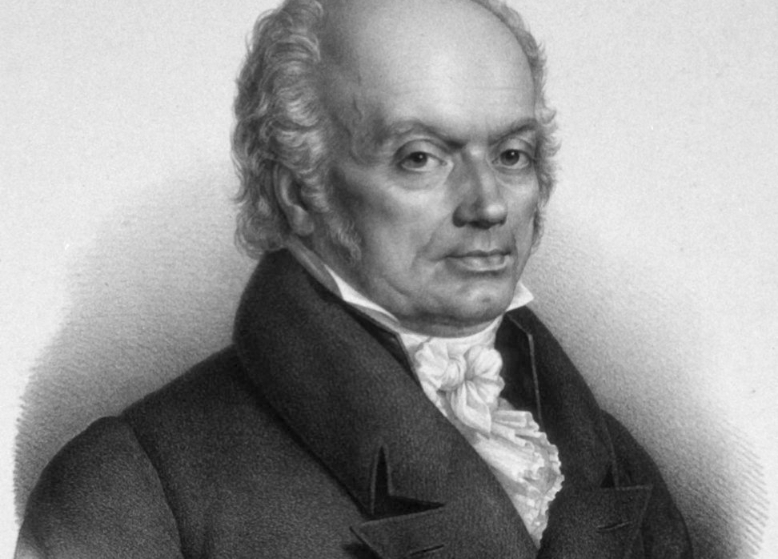
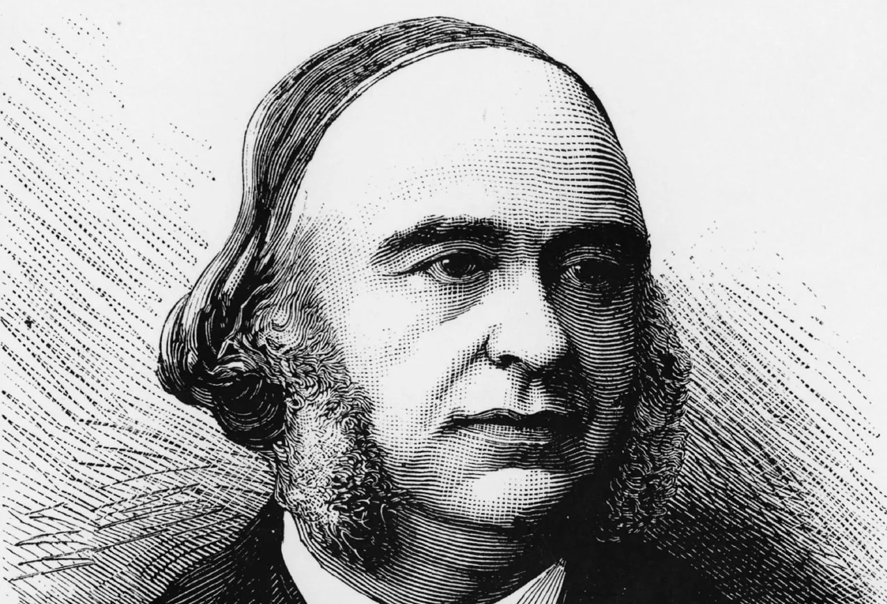

What is Phrenology?
(noun) the study of the conformation and especially the contours of the skull
based on the former belief that they are indicative of mental faculties and character


The Origins of Phrenology
Phrenology was developed by German physician Franz Joseph Gall in 1796. The discipline was influential in
the 19th century, especially from about 1810 until 1840.
Why is it a Pseudoscience?
Phrenology was mostly discredited as a scientific theory by the 1840s, when scientific experiments showed that
the mental faculties proposed by Phrenologist does not correspond to the actual functions of that part of the brain
